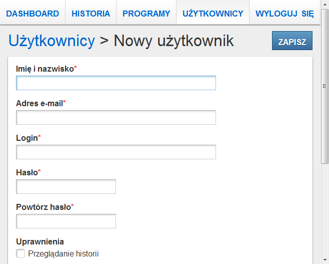

ArenaVision Tester
Wstęp
Niniejszy dokument stanowi dokumentację użytkownika dla aplikacji ArenaVision Tester.
Uruchomienie aplikacji odbywa się poprzez wpisanie przez użytkownika adresu IP i portu serwera w przeglądarce internetowej. Dane te różnią się w zależności od tego, w jakiej sieci znajduje się użytkownik. Dla sieci bezprzewodowej ML_WLAN, adres to http://192.168.21.59/, natomiast dla sieci przewodowej - http://161.87.64.20:8082/.
Wymagania
Do poprawnego korzystania z aplikacji, użytkownik musi mieć zainstalowaną jedną z popularnych, aktualnych przeglądarek internetowych.


Interfejs
Komunikaty
Przykład komunikatu
Po wykonaniu niektórych akcji mogą zostać wyświetlonone komunikaty informujące użytkownika o powodzeniu lub porażce. Wyświetlane komunikaty przykrywają menu główne. Aby móc ponownie korzystać z menu, komunikat należy zamknąć. Można to zrobić poprzez pojedyńcze kliknięcie na obszarze zajmowanym przez menu (a tym samym komunikat). Niektóre komunikaty same znikną po upływie kilku sekund.
Komunikaty, ze względu na przekazywaną informację, różnią się od siebie kolorem tła.
Komunikat informujący o pomyślnym wykonaniu akcji wygląda następująco:
Natomiast komunikat informujący o nieudanym wykonaniu akcji wygląda tak:
Okna dialogowe
Kliknięcie niektórych akcji sprawi, że na ekranie pojawi się okno dialogowe. Okno dialogowe przykrywa aktualnie wyświetlany ekran do momentu podjęcia akcji związanej z tym oknem dialogowym lub zamknięciem go.
W celu zamknięcia okna dialogowego klikamy odnośnik Anuluj (jeżeli jest dostępny) lub wciskamy na klawiaturze klawisz Esc. W przypadku korzystania z aplikacji w trybie dotykowym, aby zamknąć okno dialogowe bez podejmowania akcji klikamy przycisk .
Tryb dotykowy
Przy monitorze zainstalowanym na hali produkcyjnej nie ma dostępnej myszki ani klawiatury. W związku z tym, jeżeli aplikacja wykryje, że jest wyświetlana na tym monitorze, to włącza wsparcie dla technologii dotyku.
Po pierwsze, przewijanie zawartości w dół lub w górę odbywa się na tej samej zasadzie jak w dotykowych smartfonach. Przeciągamy palcem po ekranie w stronę, w którą chcemy przewinąć zawartość.
Po drugie, w menu pojawia się odnośnik ↻, po kliknięciu którego strona aplikacji zostanie przeładowana. To samo stanie się, gdy na klawiaturze wciśnięty zostanie klawisz F5. Funkcja ta może się przydać w przypadku, gdy stan wyświetlany na ekranie nie odzwierciedla stanu rzeczywistego (np. podczas wykonywania testu w module Dashboard nic się nie zmienia) lub klikanie jakieś akcji nie zmienia stanu aplikacji wyświetlanego na ekranie (np. po kliknięciu w module Dashboard nie pokaże się okno dialogowe z listą programów).
Po trzecie, w menu pojawia się odnośnik ⇦, po kliknięciu którego użytkownik zostanie przeniesiony do poprzednio wyświetlanego ekranu. To samo stanie się, gdy na klawiaturze wciśnięty zostanie klawisz Backspace.
Po czwarte, jeżeli w danym momencie na ekranie aplikacji dostępne jest pole formularza, to na dole ekranu pokaże się przycisk , po kliknięciu którego pojawi się wirtualna klawiatura:

Wirtualna klawiatura
Najpierw należy aktywować pole formularza, które chcemy uzupełnić klikając na nie, a następnie należy wyklikać odpowiednie znaki na klawiaturze. Aby ukryć klawiaturę można kliknąć przycisk lub przejść do ekranu, na którym nie ma żadnych pól formularzy (klawiatura i przycisk same znikną).
Po piąte, w prawym górnym rogu każdego okna dialogowego pojawia się przycisk , po kliknięciu którego okno to zostanie zamknięte.
Moduły
Użytkownicy
Moduł Użytkownicy pozwala na zarządzanie użytkownikami aplikacji. Użytkowników można przeglądać, dodawać, modyfikować oraz usuwać. Moduł ten odpowiada także za procesy uwierzytelniania i autoryzacji.
Każdy użytkownik posiada imię i nazwisko, adres e-mail, unikalny login, hasło oraz listę uprawnień.
Uprawnienia, jakie można przydzielać użytkownikom opisane są w tabeli uprawnień.
| Uprawnienie | Przydzielone | Nie przydzielone |
|---|---|---|
| Przeglądanie historii | Użytkownik może przeglądać historię uruchomień programów. | Użytkownik nie może przeglądać historii. Odnośnik HISTORIA nie pojawia się w menu. |
| Czyszczenie historii | Użytkownik ma dostęp do akcji w module Historia pozwalający na usuwanie starych wpisów. | Użytkownik nie ma dostępu do ww. akcji. |
| Przeglądanie programów | Użytkownik może przeglądać wszystkie programy. | Użytkownik nie może przeglądać dodanych programów. Odnośnik PROGRAMY nie pojawia się w menu. |
| Zarządzanie programami | Użytkownik ma dostęp do akcji , oraz w module Programy, pozwalających na dodanie nowego programu oraz zmodyfikowanie lub usunięcie istniejącego programu. | Użytkownik nie ma dostępu do ww. akcji. |
| Przypisywanie programu na pozycję 1 i 2 | Użytkownik może podczas edycji programu przypisać go na pozycję 1 lub 2 w kontrolce ręcznego wyboru programu. | Podczas edycji programu użytkownik nie widzi pól pozwalających na zmianę pozycji na jaką jest przypisany program. |
| Przypisywanie programu na pozycję 3 | Użytkownik ma dostęp do akcji w module Dashboard pozwalający na przypisanie programu na pozycję 3 w kontrolce ręcznego wyboru programu. | Użytkownik nie ma dostępu do ww. akcji. |
| Przeglądanie użytkowników | Użytkownik może przeglądać wszystkich użytkowników. | Użytkownik nie może przeglądać dodanych użytkowników. Odnośnik UŻYTKOWNICY nie pojawia się w menu. |
| Zarządzanie użytkownikami | Użytkownik ma dostęp do akcji , oraz w module Użytkownicy, pozwalających na dodanie nowego użytkownika oraz zmodyfikowanie lub usunięcie istniejącego użytkownika. | Użytkownik nie ma dostępu do ww. akcji. |
| Korekta statystyk | Użytkownik ma dostęp do akcji pozwalających na korektę wartości udanych i nieudanych testów w module Statystyki. | Użytkownik nie ma dostępu do ww. akcji. |
| Tworzenie nowej zmiany (statystyki) | Użytkownik ma dostęp do akcji w module Statystyki. | Użytkownik nie ma dostępu do ww. akcji. |
Niezalogowany użytkownik posiada następujący zestaw uprawnień:
- Przeglądanie historii,
- Przeglądanie programów.
Uwierzytelnianie
Logowanie się do aplikacji
Aby zalogować się na swoje konto, należy kliknąć odnośnik ZALOGUJ SIĘ znajdujący się w menu. Na ekranie pojawi się okno dialogowe z formularzem logowania. Należy podać login i hasło konta, na które chcemy się zalogować, a następnie wcisnąć przycisk .
UWAGA! Użytkownik zostaje zalogowany do 4 godzin po opuszczeniu aplikacji (tzn. zamknięciu przeglądarki) bez wylogowania się!
Wylogowywanie się z aplikacji
Aby wylogować się z aplikacji, należy kliknąć odnośnik WYLOGUJ SIĘ znajdujący się w menu, a następnie w oknie dialogowym, które pojawi się na ekranie, należy kliknąć przycisk .
Przeglądanie listy użytkowników Przeglądanie użytkowników
Ekran listy wszystkich użytkowników
Po kliknięciu odnośnika UŻYTKOWNIKÓW w menu głównym, na ekranie wyświetlona zostanie lista dodanych użytkownik oraz przycisk akcji dodania nowego użytkownika.
Kliknięcie imienia i nazwiska użytkownika na liście, przeniesie użytkownika aplikacji do ekranu ze szczegółami danego użytkownika.
Po kliknięciu przycisku , użytkownik przeniesiony zostanie do ekranu z formularzem dodawania nowego użytkownika. Przycisk ten pojawia się użytkownikowi tylko wtedy, gdy ten posiada uprawnienie Zarządzanie użytkownikami.
Przeglądanie wybranego użytkownika Przeglądanie użytkowników
Ekran wybranego użytkownika
Na ekranie wybranego użytkownika dostępne są szczegółowe informacje o danym użytkowniku: imię i nazwisko, login oraz adres e-mail. Hasło oraz lista uprawnień nie jest wyświetlana. Uprawnienia danego użytkownika można sprawdzić na ekranie edycji tego użytkownika.
Wybranie akcji sprawi, że użytkownik przeniesiony zostanie do ekranu z formularzem modyfikacji użytkownika. Przycisk ten pojawia się użytkownikowi tylko wtedy, gdy ten posiada uprawnienie Zarządzanie użytkownikami.
Wybranie akcji sprawi, że wyświetlone zostanie okno dialogowe pytające o potwierdzenie usunięcia użytkownika. Przycisk ten pojawia się użytkownikowi tylko wtedy, gdy ten posiada uprawnienie Zarządzanie użytkownikami.
Dodawanie użytkowników Przeglądanie użytkowników, Zarządzanie użytkownikami

Ekran dodawania nowego użytkownika
Na ekranie dodawania nowego programu dostępny jest formularz zawierający następujące pola:
- imię i nazwisko - pole tekstowe, wymagane,
- adres e-mail - pole tekstowe, wymagane,
- login - pole tekstowe, wymagane, wartość nie może się powtarzać,
- hasło - pole tekstowe, wymagane,
- powtórzenie hasła - pole tekstowe, wartość musi być identyczna do tej w polu hasło,
- lista uprawnień - pola wyboru (zobacz tabelę uprawnień).
UWAGA! Aby nowy użytkownik był dostępny po opuszczeniu ekranu dodawania nowego użytkownika, należy go wcześniej zapisać wciskając przycisk !
Modyfikacja użytkowników Przeglądanie użytkowników, Zarządzanie użytkownikami
Ekran modyfikowania istniejącego użytkownika
Na ekranie modyfikowania użytkownika dostępny jest formularz zawierający następujące pola:
- imię i nazwisko - pole tekstowe, wymagane,
- adres e-mail - pole tekstowe, wymagane,
- login - pole tekstowe, wymagane, wartość nie może się powtarzać,
- hasło - pole tekstowe, opcjonalne (należy podać tylko w przypadku nadawania nowego hasła),
- powtórzenie hasła - pole tekstowe, wartość musi być identyczna do tej w polu hasło,
- lista uprawnień - pola wyboru (zobacz tabelę uprawnień).
UWAGA! Aby dokonane w użytkowniku zmiany były dostępne po opuszczeniu ekranu modyfikowania użytkownika, należy je wcześniej zapisać wciskając przycisk !
Usuwanie użytkowników Przeglądanie użytkowników, Zarządzanie użytkownikami
Okno dialogowe usuwania istniejącego użytkownika
Aby usunąć użytkownika, na ekranie wybranego użytkownika należy wcisnąć przycisk , a następnie na oknie dialogowym, które się pojawi, należy potwierdzić usunięcie użytkownika poprzez wciśnięcie przycisku .
UWAGA! Wciśnięcie przycisku bezpowrotnie usunie danego użytkownika z aplikacji!
Programy
Moduł Programy pozwala na zarządzanie programami, które następnie uruchamiane są na stesterze. Programy można przeglądać, dodawać, modyfikować oraz usuwać.
Każdy program składa się z nazwy, czasu trwania, czasu odstępu HRS, czasu świecenia HRS, ilości cykli HRS oraz flagi wskazującej czy dany program ma być przypisany do kontrolki ręcznego wyboru programu.
Przeglądanie listy programów Przeglądanie programów

Ekran listy wszystkich programów
Po kliknięciu odnośnika PROGRAMY w menu głównym, na ekranie wyświetlona zostanie lista dostępnych programów oraz przycisk akcji dodania nowego programu.
Kliknięcie nazwy programu na liście, przeniesie użytkownika do ekranu ze szczegółami danego programu.
Po kliknięciu przycisku , użytkownik przeniesiony zostanie do ekranu z formularzem dodawania nowego programu. Przycisk ten pojawia się użytkownikowi tylko wtedy, gdy ten posiada uprawnienie Zarządzanie programami.
Przeglądanie wybranego programu Przeglądanie programów
Ekran wybranego programu
Na ekranie wybranego programu dostępne są szczegółowe informacje o danym programie: nazwa, informacja, czy program jest powtarzany w nieskończoność, czas trwania oraz zdefiniowane kroki (w formacie wykresu oraz tabeli). Ponadto, jeżeli użytkownik posiada uprawnienie Przeglądanie historii, to wyświetlana jest lista 5 ostatnich wpisów z historii dotyczących danego programu.
Wybranie akcji sprawi, że użytkownik przeniesiony zostanie do ekranu z formularzem modyfikacji programu. Przycisk ten pojawia się użytkownikowi tylko wtedy, gdy ten posiada uprawnienie Zarządzanie programami.
Wybranie akcji sprawi, że wyświetlone zostanie okno dialogowe pytające o potwierdzenie usunięcia programu. Przycisk ten pojawia się użytkownikowi tylko wtedy, gdy ten posiada uprawnienie Zarządzanie programami.
Dodawanie programów Przeglądanie programów, Zarządzanie programami
Ekran dodawania nowego programu
Na ekranie dodawania nowego programu dostępny jest formularz zawierający następujące pola:
- nazwa programu - pole tekstowe, wymagane,
- czas trwania fazy świecenia - pole tesktowe, wymagane, liczba sekund,
- czas odstępu między fazami świecenia HRS - pole tekstowe, liczba sekund,
- czas trwania fazy świecenia HRS - pole tekstowe, liczba sekund
- ilość cykli HRS - pole tekstowe, liczba.
Wartości pól: czas trwania, czas odstępu HRS oraz czas świecenia HRS
jako wartość przyjmują liczbę sekund. Jako ułatwienie dla użytkownika, zaimplementowany
został prosty konwerter jednostek czasu (godziny, minuty i sekundy)
do sekund. Dodając po danej liczbie jednostkę czasu:
h, min (lub m) lub s
i zapisaniu danych, jego wartość zostanie przekonwertowana
do liczby sekund znajdującej się w podanym czasie. Wszystkie
jednostki mogą wystąpić w tym samym momencie i w dowolnym porządku.
Odstępy między liczbami a jednostkami są opcjonalne. Poniższa
tabela przedstawia przykładowe wyniki konwersji:
| Wpisany czas trwania | Otrzymana liczba sekund |
|---|---|
| 10 s | 10 |
| 5 min | 300 |
| 1 h | 3600 |
| 5 min 10 s | 310 |
| 1 h 10 s | 3610 |
| 1 h 5 min | 3900 |
| 1 h 5 min 10 s | 3910 |
| 5m10s | 310 |
| 10s5m1h | 3910 |
| 1.5 h, 25.3 min i 33 s | 6951 |
UWAGA! Aby nowy program był dostępny po opuszczeniu ekranu dodawania nowego programu, należy go wcześniej zapisać wciskając przycisk !
Modyfikacja programów Przeglądanie programów, Zarządzanie programami

Ekran modyfikowania istniejącego programu
Na ekranie modyfikowania programu dostępny jest formularz zawierający następujące pola:
- nazwa programu - pole tekstowe, wymagane,
- kontrolka ręcznego wyboru programu - pole jednorazowego wyboru, wymagane,
- czas trwania fazy świecenia - pole tesktowe, wymagane, liczba sekund,
- czas odstępu między fazami świecenia HRS - pole tekstowe, liczba sekund,
- czas trwania fazy świecenia HRS - pole tekstowe, liczba sekund
- ilość cykli HRS - pole tekstowe, liczba.
Kontrolka ręcznego wyboru programu to przełącznik piórkowy, znajdujący się na pulpicie sterującym testera. W danym momencie przyjmuje on jedną z trzech pozycji. Na pozycjach 1 (w lewo) i 2 (środek) znajdują się programy, który zostały w aplikacji przypisane odpowiednio na pozycję 1 i 2, a na pozycji 3 (w prawo) znajduje się program, który został przypisany z wykorzystaniem funkcji Zmień program w module Dashboard.
UWAGA! Aby dokonane w programie zmiany były dostępne po opuszczeniu ekranu modyfikowania programu, należy je wcześniej zapisać wciskając przycisk !
UWAGA! Jeżeli zmieniany program jest aktualnie uruchomiony lub pozycja na kontrolce ręcznego wyboru programu została zmieniona na pozycję, którą zajmuje aktualnie uruchomiony program to nie da się zapisać zmian! Należy poczekać wtedy, aż wykonywany program się zakończy.
Usuwanie programów Przeglądanie programów, Zarządzanie programami

Okno dialogowe usuwania istniejącego programu
Aby usunąć program, na ekranie wybranego programu należy wcisnąć przycisk , a następnie na oknie dialogowym, które się pojawi, należy potwierdzić usunięcie programu poprzez wciśnięcie przycisku .
UWAGA! Wciśnięcie przycisku bezpowrotnie usunie dany program z listy programów!
Historia
W module Historia dostępne są do wglądu wszystkie zapisane zakończenia wykonywania programów na strefach.
Przeglądanie listy wpisów Przeglądanie historii
Ekran wpisów w historii
Na ekranie wpisów w historii dostępna jest filtrowalna tabela wszystkich zapisanych zakończonych wykonań programów. Każdy wiersz w tabeli odpowiada innemu wpisowi w historii i zawiera następujące informacje:
- stan zakończenia programu ( Ukończony pomyślnie, Zatrzymany, Zatrzymany z błędem),
- nazwa wykonywanego programu,
- data włączenia programu,
- czas trwania programu.
Kliknięcie na wiersz tabeli przeniesie użytkownika do ekranu wybranego wpisu, gdzie dostępnych jest więcej informacji dotyczących wybranego uruchomienia programu.
Gdy wpisów w historii będzie więcej niż 10, lista wpisów dzielona jest na strony. Nawigacja między stronami odbywa się poprzez klikanie odnośników wyświetlanych pod tabelą wpisów. Użytkownik może przejść do wybranej strony klikając na odpowiadający jej numer.
UWAGA! W danym momencie wyświetlanych jest maksymalnie pięć numerów stron: numer aktualnej strony, dwa numery stron poprzednich oraz dwa numery stron następnych (nawet w przypadku, gdy dostępnych stron jest więcej).
Listę wpisów można filtrować korzystając z formularza znajdującego się nad tabelą (widoczna tylko po wciśnięciu akcji ). Wyświetlane dane można ograniczyć do:
- wybranego programu,
- stanów zakończenia wykonywania programu,
- czasu uruchomienia programu,
- czasu zakończenia programu.
UWAGA! W przypadku wybrania kilku filtrów, wyświetlane są tylko te dane, które spełniają wszystkie wybrane kryteria. Na przykład wybranie jednego programu, stanu zakończenia Ukończony pomyślnie, wpisanie w polu Od wartości 2012-02-25, a w polu Do wartości 2012-02-26 15:00 spowoduje wyświetlenie wszystkich wykonań danego programu, które zakończyły się pomyślnie między 2012-02-25 00:00:00 a 2012-02-26 15:00:00.
Filtry aplikowane są w locie i zapisywane do momentu opuszczenia aplikacji przez użytkownika (tzn. zamknięcia karty w przęglądarce). Wszystkie aktywne filtry można usunąć klikając przycisk
Wybranie akcji sprawi, że wyświetlone zostanie okno dialogowe z formularzem czyszczenia historii. Przycisk ten pojawia się użytkownikowi tylko wtedy, gdy ten posiada uprawnienie Czyszczenie historii.
Przeglądanie wybranego wpisu Przeglądanie historii
Ekran wybranego wpisu historii
Na ekranie wpisu historii znajdują się szczegółowe informacje dotyczące wybranego uruchomienia programu:
- nazwa programu, który był wykonywany,
- tryb uruchomienia programu (Ręczny lub Automatyczny),
- stan zakończenia wykonywania programu (Ukończony, Zatrzymany lub Błąd),
- opis błędu (jeżeli stan zakończenia wykonywania programu to Błąd),
- data uruchomienia programu,
- data zakończenia programu,
- czas trwania programu,
- czas odstępu HRS programu,
- czas świecenia HRS programu,
- ilość cykli HRS programu (ile wykonano/ile było do wykonania),
- dane o temperaturze, poziomie światła, napięciu i natężeniu zbierane co sekundę podczas trwania testu i przedstawione w formie wykresów.
UWAGA! Dane wyświetlane na ekranie wpisu historii odzwierciedlają stan, jaki istniał w momencie uruchomienia programu. Zmiany wprowadzone do programu po uruchomieniu wykonywania programu nie mają wpływu na dany wpis.
Czyszczenie historii Przeglądanie historii, Czyszczenie historii

Okno dialogowe czyszczenia historii
Podając liczbę dni i klikając przycisk ,
można usunąć z historii wpisy, które są starsze niż podana liczba dni, tzn.
wpisy programów uruchomionych 24 * liczba dni godzin temu.
UWAGA! Podając jako liczba dni wartość 0
sprawi, że z historii usunięte zostaną wszystkie wpisy!
Dashboard
Dashboard
Dashboard pozwala użytkownikowi na monitorowanie aktualnego stanu testera oraz na zmianę programu przypisanego na pozycję 3 w kontrolce ręcznego wyboru programu.
Widok podzielony jest na dwie strefy: aktualny stan i ostatni test.
Sekcja Ostatni test przedstawia krótką informację o stanie w jakim zakończył się ostatnio wykonywany test (więcej informacji o tym teście dostępne jest w module Historia). Kwadrat znajdujący się na lewo od nazwy wybranego programu wskazuje na stan zakończenia testu:
- test zakończył się pomyślnie.
- test został zatrzymany, ponieważ lampa przestała świecić.
- test został zatrzymany z powodu błędu.
Sekcja Aktualny stan wskazuje jaki program jest wybrany na testerze, wartości parametrów: temperatury, poziomu światła, napięcia i natężenia oraz pasek postępu wykonywania programu. Kwadrat znajdujący się na lewo od nazwy wybranego programu wskazuje:
- nie ma połączenia ze sterownikiem.
- jest połączenie ze sterownikiem, gotowy do pracy.
- program jest aktualnie wykonywany.
Jeżeli wybrany program ma zdefiniowaną opcję HRS, to po prawej stronie paska postępu pojawią się kwadraty w ilości równej ilości cykli HRS danego programu. W środku każdego kwadratu znajduje się licznik, który przy wykonywaniu danego cyklu HRS będzie odliczał liczbę sekund w dół. W zależności od fazy w jakiej znajduje się test, kwadraty te będą przybierały inne barwy:
- wskazuje, że dany cykl HRS jeszcze się nie rozpoczął.
- wskazuje, że dany cykl HRS rozpoczął się i znajduje się w fazie wyłączenia świecenia (odliczanie wskazuje czas odstępu HRS).
- wskazuje, że dany cykl HRS znajduje się w fazie świecenia (odliczanie wskazuje czas świecenia HRS).
- wskazuje, że dany cykl HRS zakończył się pomyślnie.
Wybranie akcji Zmień program otworzy okno dialogowe z możliwością zmiany programu przypisanego na pozycji 3 w kontrolce ręcznego wyboru programu. Akcja ta widoczna jest tylko dla użytkowników z uprawnieniem Przypisywanie programu na pozycję 3.
UWAGA! W trakcie wykonywania programu akcja Zmień program jest niedostępna!
Wybranie akcji Statystyki przeniesie użytkownika do modułu Statystyki.
Zmiana programu Przypisywanie programu na pozycję 3
Okno dialogowe ze zmianą programu
Aby zmienić program przypisany na pozycji 3 w kontrolce ręcznego wyboru programu, należy kliknąć przycisk w module Dashboard. Otworzone zostanie okno dialogowe z listą wszystkich programów, oprócz dwóch, które przypisane są na pozycjach 1 i 2 w kontrolce ręcznego wyboru programu. Po wybraniu programu przez kliknięcie na jego nazwę na liście programów, szczegóły danego programu zostaną wyświetlone w obszarze Wybrany program. Jeżeli chcemy wybrać ten program, wciskamy przycisk , w przeciwnym wypadku wciskamy przycisk .
Statystyki
Ekran statystyk
Moduł statystyk zbiera dane o ilości testów zakończonych powodzeniem (zielona liczba) i niepowodzeniem (czerwona liczba) na danej zmianie i wyświetla wartości aktualnej zmiany na ekranie.
Jeżeli użytkownik posiada uprawnienie Tworzenie nowej zmiany (statystyki), to ma dostęp do akcji , po kliknięciu której aktualne wartości zostaną zapisane wraz z datą zakończenia zmiany oraz stworzony zostanie wyzerowany rekord dla nowej zmiany z aktualnym czasem jako czasem rozpoczęcia tej zmiany.
Jeżeli użytkownik posiada uprawnienie Korekta statystyk, to ma dostęp do akcji pozwalających mu na zmniejszenie (), wyzerowanie () lub zwiększenie () danej wartości.
Informacje o sprzęcie
- Adres IP i port serwera aplikacji w sieci bezprzewodowej ML_WLAN
192.168.21.59:80- Adres IP i port serwera aplikacji w sieci przewodowej
161.87.64.20:8082